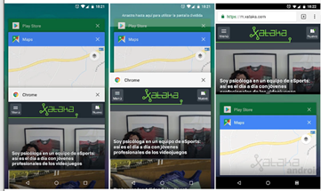
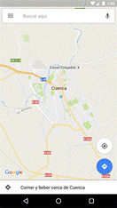
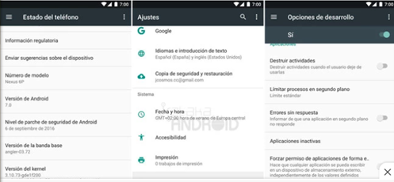

Multitarea: Control de concurrencia:
Desde la primera versión de Android lanzada en 2008 el sistema operativo móvil de Google ha contado con multitarea real, ejecutando varias aplicaciones a la vez, característica que fue potenciada a partir de 2016 con la llegada de Android 7.0 Nougat, y un año después con Android 8.0 Oreo.
Las dos últimas actualizaciones de Android hicieron al sistema operativo más productivo con la pantalla dividida y el modo PiP, ofreciendo nuevas formas de exprimir la multitarea con los siguientes trucos:
Pantalla dividida:
Android 7 y 8.
A partir de Android 7.0 Nougat podemos usar dos aplicaciones a la vez, para ello tenemos dos opciones para activarla. La primera es tocar el botón Recientes y arrastrar hacia arriba la aplicación que queremos ver en pantalla partida. Luego en la parte inferior tenemos que abrir la otra aplicación que también queremos ver en pantalla.

Atajo Rapido de la pantalla dividida (Android 7 y 8)
En Android 7 y 8 tenemos otra forma de activar la pantalla dividida es realizar una pulsación prolongada sobre el botón Recientes con la aplicación que queremos ver arriba ya abierta. A partir de Android 9 este truco ya no funciona.
Ajustar tamaño de pantalla dividida
La pantalla dividida nos permite mover el separador central para ajustar el tamaño de las aplicaciones. Por defecto se mostrarán divididas por la mitad, pero podemos cambiar el tamaño para que una aplicación ocupe aproximadamente dos tercios de pantalla y la otra un tercio.
Cambio rapido entre dos aplicaciones: Android 7 y 8.
Si estás usando dos aplicaciones con mucha frecuencia y no te interesa usar la pantalla dividida puedes dar un par de toques rápidos en el botón Recientes para ir cambiando entre las dos aplicaciones más recientes.

Forzar Pantalla Dividida

No todas las aplicaciones son compatibles con la pantalla dividida, pero podemos forzar este modo activando una opción dentro de las opciones de desarrollo:
En Android 7 Nougat:
- 1. Activa las Opciones de desarrollo: Ajustes > Estado del teléfono/tablety pulsa siete veces en Número de compilación.
- 2. Accede a Ajustes > Opciones de desarrollo y activa la opción Forzar el ajuste de tamaño de las actividadesque encontrarás al final.
- 3. Reinicia el dispositivo.
En Android 8 Oreo o superior:
- 1. Activa las Opciones de desarrollo: Ajustes > Sistema > Información del teléfono/tablet y pulsa siete veces en Número de compilación.
- 2. Accede a Ajustes > Sistema > Opciones para desarrolladores y activa la opción Forzar el ajuste de tamaño de las actividades que encontrarás al final.
- 3. Reinicia el dispositivo.
Abrir dos carpetas en el explorador de Archivos
El explorador nativo de archivos de Android nos permite mostrar dos carpetas en la pantalla dividida, para que podamos arrastrar y soltar archivos. Para ello abre el explorador y selecciona la opción Nueva ventana del menú.
El modo PiP
A partir de Android 8.0 Oreo muchas de las aplicaciones multimedia y de videollamadas incluyen el nuevo modo Imagen en imagen (PiP) que nos permite ver la imagen en una ventana flotante mientras seguimos usando otra aplicación. Este modo lo encontramos en aplicaciones como Netflix, VLC, Google Duo, Chrome, Google Maps, WhatsApp o la versión de pago de YouTube. Para activar este modo tan solo tenemos que tocar el menú de Inicio o cambiar de aplicación, automáticamente el contenido multimedia o videollamada aparecerá en una ventana flotante.